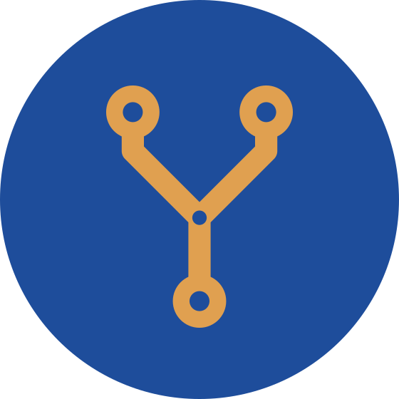
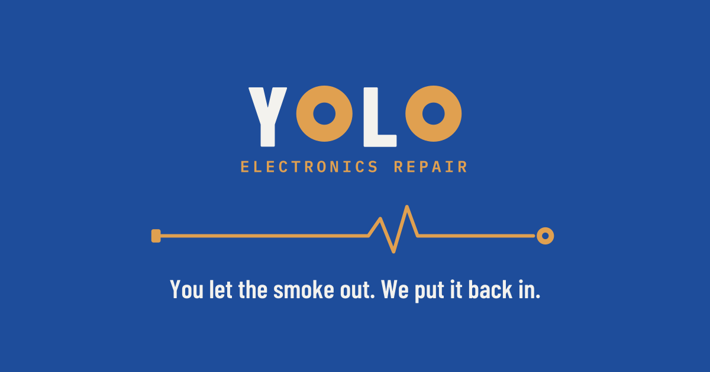
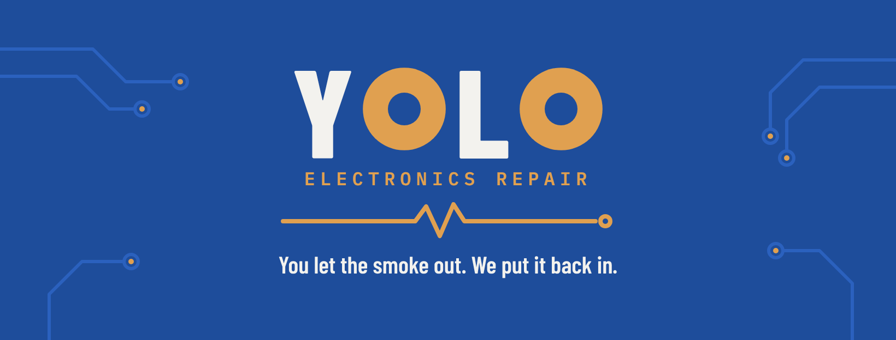

YOLO Electronics Repair — Brand Assets
Every generated asset in logos/, at working sizes. Rules are in BRANDING.md.
Palette
Solder-mask blue#1E4D9B
--yolo-blue
Deep blue#163D7E
--yolo-deep
Copper#E0A050
--yolo-copper
The mark — Y-trace
Color · disc and square tile · on white

yolo-mark.svgyolo-mark-square.svg
square, cropped round
yolo-mark-mono-black.svg
On deep blue
yolo-mark.svg

yolo-mark-mono-white.svg
The pulse — secondary mark
On white
yolo-pulse.svg
-mono-black
On deep blue
yolo-pulse.svg
-mono-white
Wordmark
Color · on white
yolo-wordmark.svg
Dark-bg · on solder-mask blue
yolo-wordmark-dark-bg.svg
Mono black · on paper
yolo-wordmark-mono-black.svg
Mono white · on black
yolo-wordmark-mono-white.svg
Lockup
Color · on white
yolo-lockup.svg
Dark-bg · on solder-mask blue
yolo-lockup-dark-bg.svg
Mono black · on paper
yolo-lockup-mono-black.svg
Mono white · on black

yolo-lockup-mono-white.svg
Favicons
PNG favicons at native size
16
32
48
64
180 · touch (@2x)
192 (@2x)
maskable, masked
Link-preview card

logos/og/yolo-og-1200x630.png
Not generated
These are hand-made PNGs with no vector source, kept in social/. They can't be rebuilt or resized from brand.toml.
social/yolo-badge-1080.png

social/yolo-facebook-cover-1640x624.png